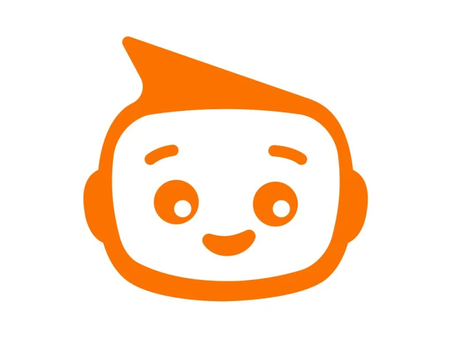

01 / SPORTSTECHIn the wild
Cardyiq ↗
A live product, a backend rebuild, a new business model, and a team of ten. Engineering goes beyond the code.
150+ venues · 6 cities · 99.9% uptime
and sometimes, things that don’t.
That’s how you learn.
Make it useful.
Make it real.
Then make it better.
I’m Aws. Software engineer, former architect,
incurable tinkerer.
I take messy problems and turn them into
products people actually use.
HI. I'M AWS.
I like the whole messy process: figuring out the problem, sketching an idea, building it, and finding out what breaks when real people use it.
Let me show you what I mean. ↘See what I’ve built ↘01 / THE WORK
A few things I’ve built, rebuilt,
and learned the hard way.
The good stuff is in the details.
A live product, a backend rebuild, a new business model, and a team of ten. Engineering goes beyond the code.


Tasdid and Jabi, plus oil stations, AML, Qi Hawala, service providers, KRG billing, Basmayah loans, and native mini-app work.


Old family material becomes a living tree, then a piece of art for the wall. I’m building the whole journey.


I kept rebuilding notifications. So I made one system for providers, retries, scheduling, and delivery states.

Telegram → image tools → content → callbacks
Inside the bot ↗

Send a photo through Telegram. Get a cleaned image, a description, a suggested price, and tools inside the conversation.


A master’s thesis became my first company. Building models in a browser, real customers, and a lot of firsts.


A voice interviewer that listens, follows up, and produces a structured evaluation. An exercise in making AI feel less robotic.
02 / THE LAB
Here’s a little piece of the machinery.
Send a burst. Break a
provider.
Go on. Push the button. ↙
A LOCAL SIMULATION, NOT A LIVE BENCHMARK. FLAKY MODE FAILS EVERY THIRD FIRST ATTEMPT; RETRIES RECOVER.
03 / THE HUMAN BEHIND THE COMMITS
Now I build the things running behind a million people’s screens.
For nine years, I worked in architecture and construction. With UNOPS in Anbar, I managed a reconstruction program covering around 1,500 homes. I started writing Python to automate the repetitive parts of Revit. Then the scripts got more interesting than the drawings.
A thesis became HAWSR. HAWSR became a company. And somewhere between my first customer and my first broken deployment, software became the work.
Today I’m a Senior Software Engineer at Qi Card and a Founding Engineer & Technical Lead at Cardyiq. I still sketch first. I still ask too many questions. And I still like getting my hands dirty.
01 Understand it before you fix it.
02 Real users beat perfect demos.
03 Leave the team stronger.
04 / GOT SOMETHING INTERESTING?
A hard problem. A wild idea. A good team.
That’s usually
where it starts.